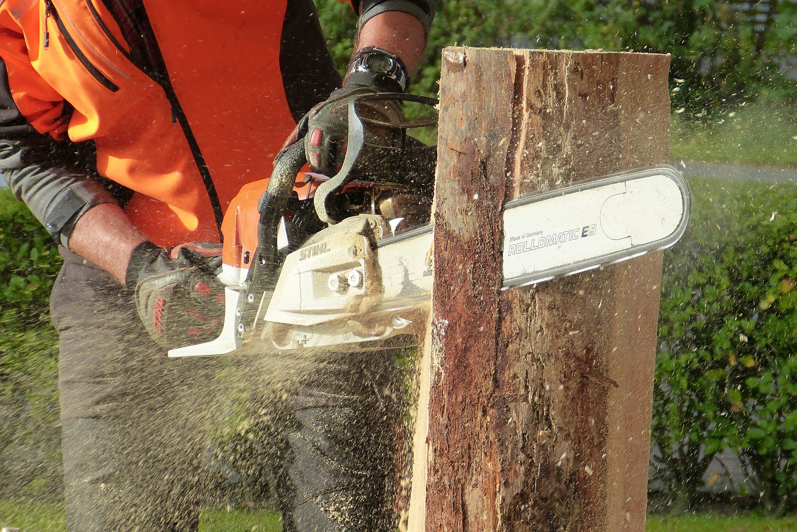
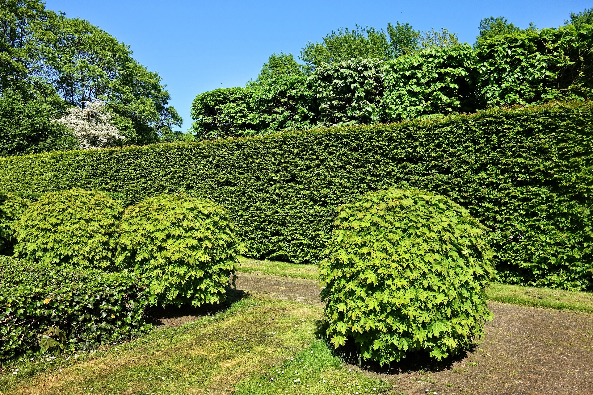
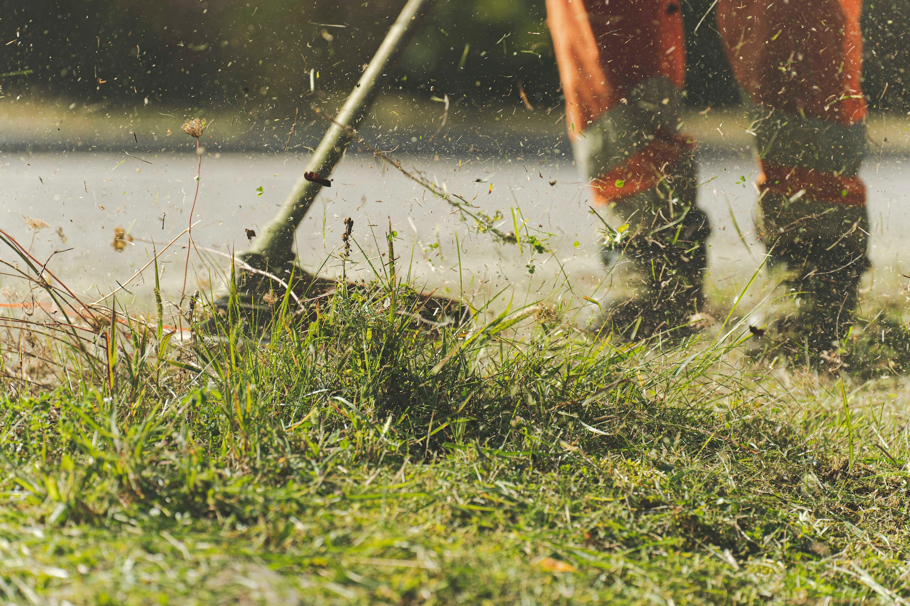

OsmarJardins
Na Osmar Jardins, estamos comprometidos em trazer o melhor para suas árvores e paisagem. Entre em contato conosco hoje mesmo para agendar um orçamento e dar o primeiro passo para uma paisagem mais segura e encantadora. árvores merecem o melhor.
Fale Conosco
A mais de 10 anos no mercado de trabalho.
Contamos com uma grande equipe e
equipamentos paraentregar um serviço com excelência, temos ao nosso lado grandes parceiros e
atuamos em todo o Distrito Federal.
Serviços Oferecido

Corte e Poda
Realizamos corte e poda de árvores de grande e pequeno porte.

Manutenção
Realizamos Manutenção de Palmeiras, Coqueiros e árvores em geral.

limpeza de Lote
Realizamos limpeza de lotes.
Por Que Escolher a Osmar Jardins ?
- Profissionalismo: Nosso compromisso com a qualidade e a segurança é inabalável. Somos licenciados e segurados para sua tranquilidade.
- Experiência: Com anos de experiência em corte e poda de árvores, nossa equipe domina as técnicas mais recentes para obter os melhores resultados.
- Equipamento Avançado: Investimos em equipamentos de ponta para garantir que nosso trabalho seja feito com eficiência e precisão.
- Preservação Ambiental: Respeitamos a natureza e adotamos práticas sustentáveis em todos os nossos projetos.
- Atendimento Personalizado: Entendemos que cada cliente é único. Trabalharemos de perto com você para atender às suas necessidades específicas.